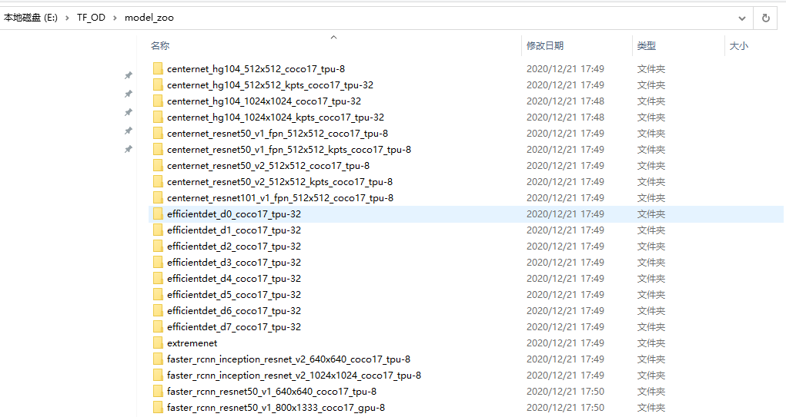

3 目标检测模型
3.1 模型下载
利用python程序将所有的模型下载到本地，并读取各种模型的精确度。
3.1.1 获取模型信息
获取模型信息python程序
#!/usr/bin/env python
# author:AnFany
# datetime:2020/12/4 9:41
import requests #导入requests包
from bs4 import BeautifulSoup
import re
import pandas as pd
# 从github获取链接，将所有模型下载到本地
Github_Address = r'https://github.com/tensorflow/models/blob/master/research/object_detection/g3doc/tf2_detection_zoo.md'
Headers = {"User-Agent":"Mozilla/5.0 (Windows NT 6.1; WOW64) AppleWebKit/537.36 (KHTML, like Gecko) "
"Chrome/73.0.3683.86 Safari/537.36"}
strhtml = requests.get(Github_Address, headers=Headers)
# 获取表格
soup_table = BeautifulSoup(strhtml.text,'lxml').table
# tr标签内的数据
tr_set = soup_table.find_all("tr")
# 字典形式存储数据
Model_Dict = {}
Start_Sign = 0
for k in tr_set:
if not Start_Sign:
Start_Sign += 1
else:
uu = [ss for ss in k.get_text().split('\n') if ss]
# 下载链接
for gu in k.find_all('a'):
link = gu['href']
# 图片或者视频
if '/' in uu[2]:
fig_s, video_s = uu[2].split('/')
Model_Dict[uu[0]] = {'速度': uu[1], '图片': fig_s, '视频': video_s}
else:
Model_Dict[uu[0]] = {'速度': uu[1], '图片': uu[2], '视频': 0}
# 实现的功能
for g in ['Boxes', 'Keypoints', 'Masks']:
if g in uu[3]:
Model_Dict[uu[0]][g] = 1
else:
Model_Dict[uu[0]][g] = 0
Model_Dict[uu[0]]['地址'] = link
# 将字典形式转换
Dict_Model = {}
for l in Model_Dict:
if '模型' not in Dict_Model:
Dict_Model['模型'] = [l]
else:
Dict_Model['模型'].append(l)
for kn in Model_Dict[l]:
if kn not in Dict_Model:
Dict_Model[kn] = [Model_Dict[l][kn]]
else:
Dict_Model[kn].append(Model_Dict[l][kn])
# 写入文件
Model_Data = pd.DataFrame(Dict_Model)
Model_Data.to_csv('tfod_model_zoo.csv', index=False, encoding='gbk')
| 模型 | 速度(ms) | 图片(coco MAP) | 视频(coco MAP) | Boxes | Key Points | Masks | 下载 |
|---|---|---|---|---|---|---|---|
| CenterNet HourGlass104 512x512 | 70 | 41.9 | 0 | 1 | 0 | 0 | link |
| CenterNet HourGlass104 Keypoints 512x512 | 76 | 40 | 61.4 | 1 | 1 | 0 | link |
| CenterNet HourGlass104 1024x1024 | 197 | 44.5 | 0 | 1 | 0 | 0 | link |
| CenterNet HourGlass104 Keypoints 1024x1024 | 211 | 42.8 | 64.5 | 1 | 1 | 0 | link |
| CenterNet Resnet50 V1 FPN 512x512 | 27 | 31.2 | 0 | 1 | 0 | 0 | link |
| CenterNet Resnet50 V1 FPN Keypoints 512x512 | 30 | 29.3 | 50.7 | 1 | 1 | 0 | link |
| CenterNet Resnet101 V1 FPN 512x512 | 34 | 34.2 | 0 | 1 | 0 | 0 | link |
| CenterNet Resnet50 V2 512x512 | 27 | 29.5 | 0 | 1 | 0 | 0 | link |
| CenterNet Resnet50 V2 Keypoints 512x512 | 30 | 27.6 | 48.2 | 1 | 1 | 0 | link |
| EfficientDet D0 512x512 | 39 | 33.6 | 0 | 1 | 0 | 0 | link |
| EfficientDet D1 640x640 | 54 | 38.4 | 0 | 1 | 0 | 0 | link |
| EfficientDet D2 768x768 | 67 | 41.8 | 0 | 1 | 0 | 0 | link |
| EfficientDet D3 896x896 | 95 | 45.4 | 0 | 1 | 0 | 0 | link |
| EfficientDet D4 1024x1024 | 133 | 48.5 | 0 | 1 | 0 | 0 | link |
| EfficientDet D5 1280x1280 | 222 | 49.7 | 0 | 1 | 0 | 0 | link |
| EfficientDet D6 1280x1280 | 268 | 50.5 | 0 | 1 | 0 | 0 | link |
| EfficientDet D7 1536x1536 | 325 | 51.2 | 0 | 1 | 0 | 0 | link |
| SSD MobileNet v2 320x320 | 19 | 20.2 | 0 | 1 | 0 | 0 | link |
| SSD MobileNet V1 FPN 640x640 | 48 | 29.1 | 0 | 1 | 0 | 0 | link |
| SSD MobileNet V2 FPNLite 320x320 | 22 | 22.2 | 0 | 1 | 0 | 0 | link |
| SSD MobileNet V2 FPNLite 640x640 | 39 | 28.2 | 0 | 1 | 0 | 0 | link |
| SSD ResNet50 V1 FPN 640x640 (RetinaNet50) | 46 | 34.3 | 0 | 1 | 0 | 0 | link |
| SSD ResNet50 V1 FPN 1024x1024 (RetinaNet50) | 87 | 38.3 | 0 | 1 | 0 | 0 | link |
| SSD ResNet101 V1 FPN 640x640 (RetinaNet101) | 57 | 35.6 | 0 | 1 | 0 | 0 | link |
| SSD ResNet101 V1 FPN 1024x1024 (RetinaNet101) | 104 | 39.5 | 0 | 1 | 0 | 0 | link |
| SSD ResNet152 V1 FPN 640x640 (RetinaNet152) | 80 | 35.4 | 0 | 1 | 0 | 0 | link |
| SSD ResNet152 V1 FPN 1024x1024 (RetinaNet152) | 111 | 39.6 | 0 | 1 | 0 | 0 | link |
| Faster R-CNN ResNet50 V1 640x640 | 53 | 29.3 | 0 | 1 | 0 | 0 | link |
| Faster R-CNN ResNet50 V1 1024x1024 | 65 | 31 | 0 | 1 | 0 | 0 | link |
| Faster R-CNN ResNet50 V1 800x1333 | 65 | 31.6 | 0 | 1 | 0 | 0 | link |
| Faster R-CNN ResNet101 V1 640x640 | 55 | 31.8 | 0 | 1 | 0 | 0 | link |
| Faster R-CNN ResNet101 V1 1024x1024 | 72 | 37.1 | 0 | 1 | 0 | 0 | link |
| Faster R-CNN ResNet101 V1 800x1333 | 77 | 36.6 | 0 | 1 | 0 | 0 | link |
| Faster R-CNN ResNet152 V1 640x640 | 64 | 32.4 | 0 | 1 | 0 | 0 | link |
| Faster R-CNN ResNet152 V1 1024x1024 | 85 | 37.6 | 0 | 1 | 0 | 0 | link |
| Faster R-CNN ResNet152 V1 800x1333 | 101 | 37.4 | 0 | 1 | 0 | 0 | link |
| Faster R-CNN Inception ResNet V2 640x640 | 206 | 37.7 | 0 | 1 | 0 | 0 | link |
| Faster R-CNN Inception ResNet V2 1024x1024 | 236 | 38.7 | 0 | 1 | 0 | 0 | link |
| Mask R-CNN Inception ResNet V2 1024x1024 | 301 | 39 | 34.6 | 1 | 0 | 1 | link |
| ExtremeNet | -- | -- | 0 | 1 | 0 | 0 | link |
3.1.2 下载模型
模型下载python程序
#!/usr/bin/env python
# author:AnFany
# datetime:2020/12/4 11:34
import urllib.request
import os
import pandas as pd
# 下载模型到本地
import tarfile
LocalFolder = r'E:\TF_OD\model_zoo'
# 获得模型下载地址
def load_model(csv=r'E:\TF_OD\py_pycharm\tfod_model_zoo.csv', folder=LocalFolder):
data = pd.read_csv(csv, encoding='gbk')
for add in data['地址'].values:
name = add.split('/')
if name[-1] not in os.listdir(folder):
print('模型%s Loading……' % name[-1])
urllib.request.urlretrieve(add, folder + '\\%s' % name[-1])
# 将模型解压到文件夹中
file_list = os.listdir(folder)
for file in file_list:
if '.tar.gz' in file:
print('模型%s解压缩………………' % file)
try:
t = tarfile.open(folder + '\\%s' % file)
t.extractall(path=folder)
t.close()
print('完成')
except Exception as e:
print('Warning！！失败，模型%s没有下载完，请重新下载' % file)
return print('模型下载完毕')
load_model()

3.2 图片目标检测
python程序
#!/usr/bin/env python
# author:AnFany
# datetime:2020/12/4 13:18
# 利用下载到本地的模型实现图片的目标检测
import os
import tensorflow as tf
from object_detection.utils import label_map_util
from object_detection.utils import visualization_utils as viz_utils
import numpy as np
from PIL import Image
# 模型名称
Model_Path = r'E:\TF_OD\model_zoo\efficientdet_d2_coco17_tpu-32'
# 输入图片路径
In_Figure_Path = r'E:\TF_OD\IN_Figure'
# 输出图片路径
Out_Figure_Path = r'E:\TF_OD\Out_Figure'
# 标签文件
PATH_TO_LABELS = 'E:\TF_OD\py_pycharm\mscoco_label_map.pbtxt'
# 图片格式转为数组
def load_image_into_numpy_array(path):
return np.array(Image.open(path))
def figure_object_detection(modelp=Model_Path, infigurep=In_Figure_Path, labelsp=PATH_TO_LABELS, outfigure=Out_Figure_Path):
"""
实现图片的目标检测
:param modelp: 模型路径
:param infigurep: 输入图片的路径
:param labelsp: 标签路径
:param oj: 需要识别出的类别
:return: 识别出的图片存放路径
"""
# 获取识别物体的标签对应字典
category_index = label_map_util.create_category_index_from_labelmap(labelsp, use_display_name=True)
# 加载模型
detect_fn = tf.saved_model.load(modelp + "/saved_model")
# 图片转数组
for f in os.listdir(infigurep):
image_np = load_image_into_numpy_array(r'%s/%s' %(infigurep, f))
input_tensor = tf.convert_to_tensor(image_np)
input_tensor = input_tensor[tf.newaxis, ...]
detections = detect_fn(input_tensor)
num_detections = int(detections.pop('num_detections'))
detections = {key: value[0, :num_detections].numpy() for key, value in detections.items()}
detections['num_detections'] = num_detections
detections['detection_classes'] = detections['detection_classes'].astype(np.int64)
image_np_with_detections = image_np.copy()
viz_utils.visualize_boxes_and_labels_on_image_array(
image_np_with_detections,
detections['detection_boxes'],
detections['detection_classes'],
detections['detection_scores'],
category_index,
use_normalized_coordinates=True,
max_boxes_to_draw=200,
min_score_thresh=.30,
agnostic_mode=False)
# 保存为图片
image = Image.fromarray(image_np_with_detections, 'RGB')
image.save(r'%s/%s' % (outfigure, f))
figure_object_detection()
3.3 视频目标检测
3.3.1 本地视频
实现思路：将视频分成帧进行目标检测，然后在组合成视频。
python程序
#!/usr/bin/env python
# author:AnFany
# datetime:2020/12/11 16:03
# 实现本地视频的目标检测
import cv2
import os
import tensorflow as tf
from object_detection.utils import label_map_util
from object_detection.utils import visualization_utils as viz_utils
import numpy as np
from PIL import Image
VideoInPath = r'E:\odapi_gwt\models\workspace\training_demo_RiverFloatage\river_video_floatage\Video_2020-11-30_161247.wmv'
VideoOutPath = r'E:\odapi_gwt\models\workspace\training_demo_RiverFloatage\river_video_floatage\test_RF.mp4'
Figpath = r'E:\odapi_gwt\models\workspace\training_demo_RiverFloatage\river_video_floatage\test_fig'
TimeInt = 1 # 间隔一帧保存一张图片
FPs = 40
# 模型名称
Model_Path = r'E:\odapi_gwt\models\workspace\training_demo_RiverFloatage\exported-models\RiverFloatage_Model'
# 标签文件
PATH_TO_LABELS = r'E:\odapi_gwt\models\workspace\training_demo_RiverFloatage\annotations\river_floatage.pbtxt'
"""
# 第一部分：视频拆成帧
"""
def video2figure(videos_path=VideoInPath, figure_path=Figpath, time_interval=TimeInt):
fig_list = []
vidcap = cv2.VideoCapture(videos_path)
success, image = vidcap.read()
count = 0
while success:
success, image = vidcap.read()
if count % time_interval == 0:
if image is None:
break
cv2.imencode('.jpg', image)[1].tofile('%s/fig_%d.jpg' % (figure_path, count))
fig_list.append('fig_%d.jpg' % count)
count += 1
print('视频转换为图片')
return fig_list
"""
# 第二部分：目标检测图片
"""
# 图片格式转为数组
def load_image_into_numpy_array(path):
return np.array(Image.open(path))
def figure_object_detection(modelp=Model_Path, infigurep=video2figure(), labelsp=PATH_TO_LABELS, outfigure=Figpath):
"""
实现图片的目标检测
:param modelp: 模型路径
:param infigurep: 输入图片的路径
:param labelsp: 标签路径
:param oj: 需要识别出的类别
:return: 识别出的图片存放路径
"""
# 获取识别物体的标签对应字典
category_index = label_map_util.create_category_index_from_labelmap(labelsp, use_display_name=True)
# 加载模型
detect_fn = tf.saved_model.load(modelp + "/saved_model")
# 检测后的图片列表
object_fig_list = []
# 图片转数组
for f in infigurep:
image_np = load_image_into_numpy_array(r'%s/%s' %(outfigure, f))
input_tensor = tf.convert_to_tensor(image_np)
input_tensor = input_tensor[tf.newaxis, ...]
detections = detect_fn(input_tensor)
num_detections = int(detections.pop('num_detections'))
detections = {key: value[0, :num_detections].numpy() for key, value in detections.items()}
detections['num_detections'] = num_detections
detections['detection_classes'] = detections['detection_classes'].astype(np.int64)
image_np_with_detections = image_np.copy()
viz_utils.visualize_boxes_and_labels_on_image_array(
image_np_with_detections,
detections['detection_boxes'],
detections['detection_classes'],
detections['detection_scores'],
category_index,
use_normalized_coordinates=True,
max_boxes_to_draw=3,
min_score_thresh=0.2,
agnostic_mode=False)
# 保存为图片
image = Image.fromarray(image_np_with_detections, 'RGB')
image.save(r'%s/od_%s' % (outfigure, f))
object_fig_list.append(r'%s/od_%s' % (outfigure, f))
print('检测完毕')
return object_fig_list
"""
# 第三部分：图片连成视频
"""
def figure2video(figlist=figure_object_detection(), outpath=VideoOutPath, fps=FPs):
img = Image.open(figlist[0])
img_size = img.size # 获得图片分辨率，im_dir文件夹下的图片分辨率需要一致
fourcc = cv2.VideoWriter_fourcc(*'mp4v')
videoWriter = cv2.VideoWriter(outpath, fourcc, fps, img_size)
for i in figlist:
frame = cv2.imdecode(np.fromfile(i, dtype=np.uint8), -1)
videoWriter.write(frame)
videoWriter.release()
return print('视频完毕')
figure2video()
3.3.2 在线视频
实现思路：利用OpenCV实现。python程序
#!/usr/bin/env python
# author:AnFany
# datetime:2020/12/11 16:00
# 实现实时视频的目标检测
import cv2
import os
import tensorflow as tf
from object_detection.utils import label_map_util
from object_detection.utils import visualization_utils as viz_utils
import numpy as np
from PIL import Image
# 模型名称
Model_Path = r'E:\odapi_gwt\models\workspace\training_demo_james_kobe\exported-models\Lebron_Kobe_Model'
# 标签文件
PATH_TO_LABELS = r'E:\odapi_gwt\models\workspace\training_demo_james_kobe\annotations\label_map.pbtxt'
# 实时视频的输入文件
CAPVideo = cv2.VideoCapture(0, cv2.CAP_DSHOW)
def real_time_object_detection(modelp=Model_Path, labelsp=PATH_TO_LABELS, cap=CAPVideo):
# 获取识别物体的标签对应字典
category_index = label_map_util.create_category_index_from_labelmap(labelsp, use_display_name=True)
# 加载模型
detect_fn = tf.saved_model.load(modelp + "/saved_model")
while 1:
ret, image_np = cap.read()
print(image_np)
input_tensor = tf.convert_to_tensor(image_np)
input_tensor = input_tensor[tf.newaxis, ...]
detections = detect_fn(input_tensor)
num_detections = int(detections.pop('num_detections'))
detections = {key: value[0, :num_detections].numpy() for key, value in detections.items()}
detections['num_detections'] = num_detections
detections['detection_classes'] = detections['detection_classes'].astype(np.int64)
image_np_with_detections = image_np.copy()
viz_utils.visualize_boxes_and_labels_on_image_array(
image_np_with_detections,
detections['detection_boxes'],
detections['detection_classes'],
detections['detection_scores'],
category_index,
use_normalized_coordinates=True,
max_boxes_to_draw=3,
min_score_thresh=0.2,
agnostic_mode=False)
#
cv2.imshow('object detection', image_np_with_detections)
if cv2.waitKey(25) & 0xFF == ord('q'):
cv2.destroyAllWindows()
break
cap.release()
cv2.destroyAllWindows()
real_time_object_detection()